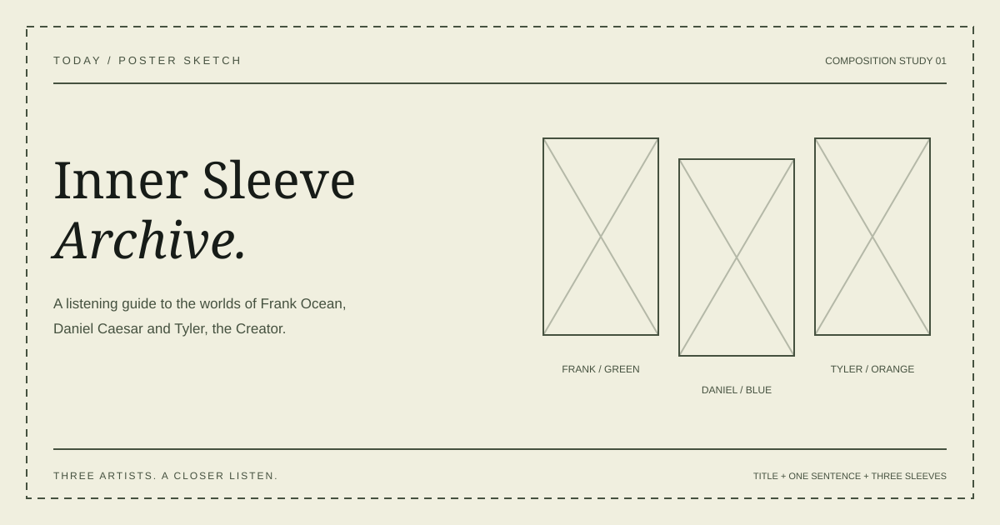

Five ideas. One clear direction.
Five project ideas
- 01. Artist portrait archive
- Introduce each artist through a short background, creative development, one song study and three entry songs.
Audience: Students who know a few tracks and want to understand the people and choices behind them. - 02. One record, three worlds
- Explore one representative album by each artist through its sound, structure and visual identity.
Audience: Listeners ready to move from individual songs into a full album. - 03. Creative languages compared
- Compare storytelling, vocal expression, production and visual choices using examples from the three artists.
Audience: Listeners familiar with all three artists who want to explain their differences. - 04. Creative development timeline
- Use a few dated releases to show how each artist's sound and ideas develop.
Audience: New fans who want a clear route through an artist's catalogue. - 05. A first-listen route
- Recommend a starting point based on memory, vocal intimacy or colourful production, with a detail to listen for.
Audience: Curious listeners who do not yet know which artist or song to try first.
Preferred direction: artist portrait archive
The artist portrait archive gives a new listener a clear route through four pages. It combines short context with concrete listening examples, while timelines and album details can remain small sections inside each portrait.
Working title: Inner Sleeve Archive
One sentence: A listening guide to the worlds of Frank Ocean, Daniel Caesar and Tyler, the Creator.
Audience: University students who recognise a few songs and want an approachable introduction to the artists and their creative choices.
Four planned core pages
| Page | File | Purpose |
|---|---|---|
| Home | index.html | Introduce the archive, identify the reader and link to the three artist portraits. |
| Frank Ocean | frank.html | Introduce Frank Ocean, study Self Control and recommend Acura Integurl, White Ferrari and Chanel. |
| Daniel Caesar | daniel.html | Introduce Daniel Caesar, study Let Me Go and recommend Who Knows, Sins Of The Father and Cool. |
| Tyler, the Creator | tyler.html | Introduce Tyler, the Creator, study November and recommend See You Again, EARFQUAKE and 911 / Mr. Lonely. |
Main page: The artist portrait is the most important page. Start with Frank Ocean as the shared page pattern: introduction, three development points, one focus song and three entry songs. A reader should leave with one creative choice they can explain and one song they want to hear.
Smallest useful version: Four linked pages: Home and three artist portraits. Each portrait has short context, one focus song and three entry songs. Use semantic HTML, one responsive stylesheet, useful image descriptions and working listening/source links. Add the required browser interaction in a later stage.
Poster sketch
An early composition study: a clear title, one sentence and three visual spaces. The next-session package includes the finished 1200 x 630 cover.
